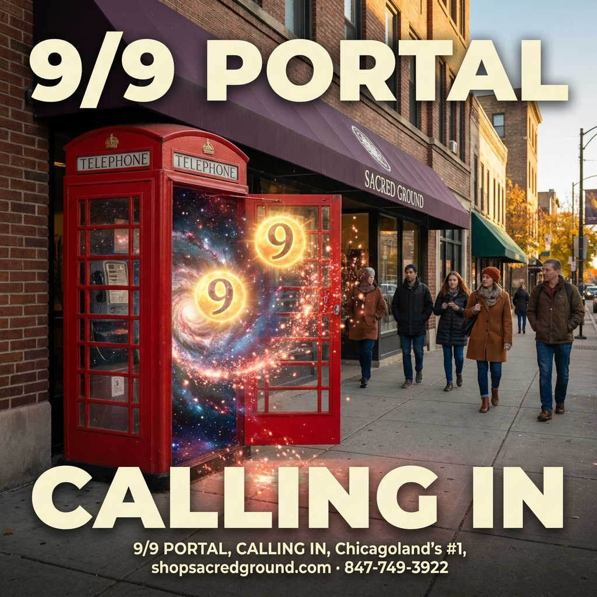
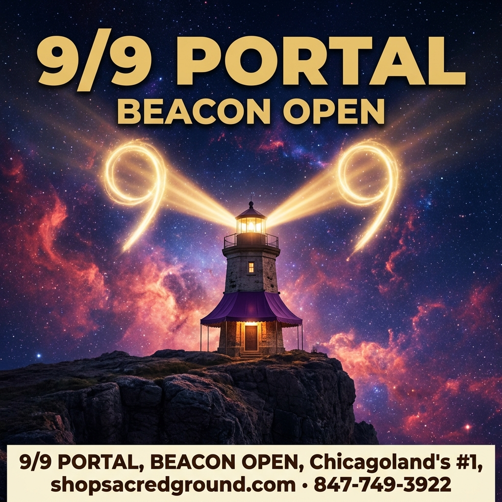
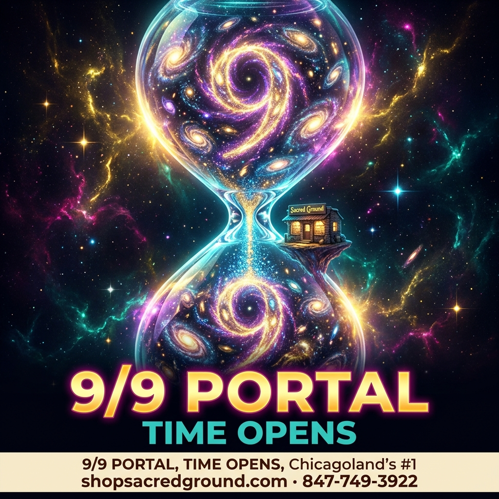

Afternoon · LOCKED — The Veil Lifts
Founder pick 28038 (cosmic curtain). Prompt-meta “cream footer” scrubbed → shipped media 28039. Morning stays 28031. Virgo night-before unchanged.

Phone booth → cosmos
media 28035

Cosmic lighthouse beams
media 28036

Hourglass of galaxies
media 28037
KEEPER · Cosmic curtain / veil
pick 28038 → ship 28039 (footer cleaned)